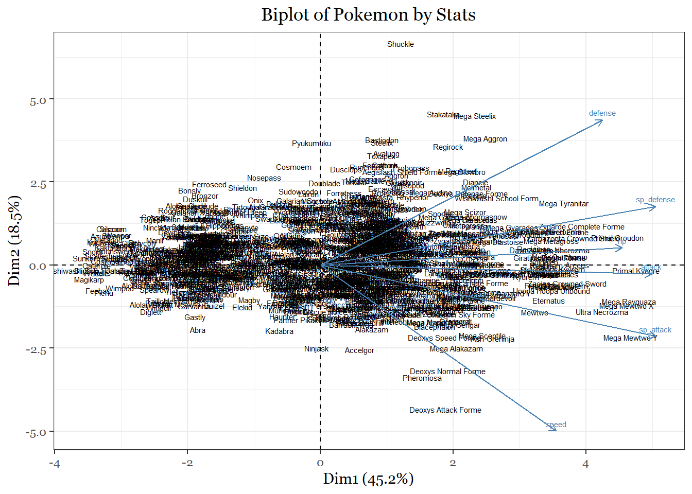

Since this task is mostly an exercise in using visualization tools I will first create a simple principle component analysis to get a cursory glance at how the Pokemon are being placed.
pokemon_pca <- prcomp(pokemon_data_full[,c(19:24)], center=T, scale=T)#Ex 1
summary(pokemon_pca)## Importance of components:
## PC1 PC2 PC3 PC4 PC5 PC6
## Standard deviation 1.6561 1.0521 0.8875 0.8189 0.66131 0.50473
## Proportion of Variance 0.4571 0.1845 0.1313 0.1118 0.07289 0.04246
## Cumulative Proportion 0.4571 0.6416 0.7729 0.8847 0.95754 1.00000par(mfrow=c(1,1))
scores <- pokemon_pca$x
plot(scores[,1], scores[,2], type="n")
text(scores[,1], scores[,2], label= pokemon_data_full$name, repel = TRUE, cex=.5)Eternatus Eternamax probably needs to be removed in order to get a better glance at the Pokemon.
pokemon_data_biplot <- pokemon_data_full[,c(3,19:24)]
pokemon_data_biplot<- pokemon_data_biplot[-1028,]
rownames(pokemon_data_biplot)<- pokemon_data_biplot[,1]
pokemon_data_biplot[,1]<- NULL
pokemon_biplot<-prcomp(pokemon_data_biplot,center =T, scale= T)
summary(pokemon_biplot)## Importance of components:
## PC1 PC2 PC3 PC4 PC5 PC6
## Standard deviation 1.6461 1.0547 0.8955 0.8304 0.65364 0.50923
## Proportion of Variance 0.4516 0.1854 0.1337 0.1149 0.07121 0.04322
## Cumulative Proportion 0.4516 0.6370 0.7706 0.8856 0.95678 1.00000# plot the results
library(factoextra)
fviz_pca_biplot(pokemon_biplot, labelsize = 2, geom = "text") +
theme_bw() +
labs(title = "Biplot of Pokemon by Stats")+
theme(text = element_text(family = "Georgia"),
plot.title = element_text(size = 13, margin(b = 10), hjust = 0.5, family = "Georgia"))
The first principal component (PC1) accounts for 45.2% of the variance. We can make the case that it probably measures total stats because we see the weakest unevolved Pokemon on left and the strongest mega evolved legendary Pokemon on the right. The second principal component (PC2), which accounts for 18.5 percent of the variation, seperates Pokemon based on their offensive and defensive capabilities. Pokemon at the bottom of the plot have a larger proportion of their stats devoted to speed and offense. Pokemon at the top have a larger proportion of their stats devoted to defenses. Thus a principal component analysis that uses stats as the variables seperates pokemon by their functions in battle.
For me this project served a few purposes. It not only permitted me to practice a number of coding skills but also allowed me to revisit a gaming series that I probably spent way to much time on in my childhood and adolescence. Having that personal understanding of the data did, however, help me understand many of the findings we uncovered, even if they were unexpected. If nothing else, this study underscored for me the importance of an intimate understanding of the data set being worked with. Although most of the findings were expected, I think fans of the franchise and data enthusiasts have a lot to look forward to as Gamefreak continues expand it’s franchise.
The first data set was obtained from Kaggle user Mario Tormo Romero: https://www.kaggle.com/mariotormo/complete-pokemon-dataset-updated-090420
The 8 secondary data sets were produced from 8 google form surveys that asked respondents to rate the designs of most of the pokemon on a scale from 1-10. All of the pictures used in the surveys were obtained from https://www.serebii.net/pokemon/.
To verify the accuracy of some of the results I used https://pokemondb.net/type/.
Many of the graphs used in this project were inspired by Rob Kabacoff’s data visualization book.